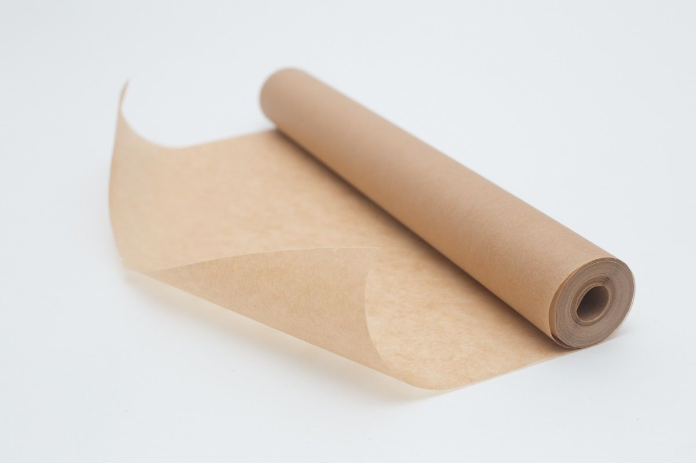

Рецепт:
Чтобы приготовить сосиски в тесте нам понадобится тесто слоёное в чёрной упаковке лучше,яйцо взбитое в тарелке вилкой,сосиски, мука,протвень,пергаментная бумага и чем мы будем размазывать яйцо само приготовление сейчас расскажу.
- Сначала взбиваем яйцо в тарелке лучше вилкой
- далее открываем сосиски и готовим их
- потом на столе рассыпаем муку и ложим туда сосиски,но сначала мы готовим тесто и раскатываем его по столу на сколько сможете и заворачеваете сосиску в тесто
- дальше снизу добавляем муку,и ложим на протвень так чтобы хватило место для всех сосисок,и засовываем их в духовку при 150градусов и включаем сверху и снизу где будут гретца сосиски
- если что пергаметная бумага на протвени и сосиски на ней
- потом мы ждем примерно 30минут и сосиски готовы главное чтоб они не стали коричневыми.

